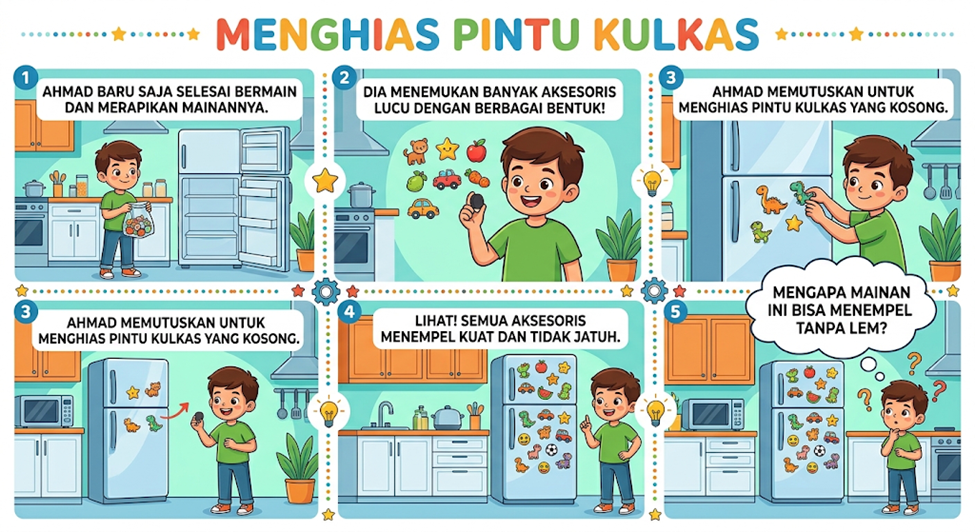

AYO BERSIAP dan MENGAMATI
Halo ilmuwan kecil! Sebelum petualangan dimulai, pastikan kamu siap mengikuti aktivitas hari ini. Siapkan alat tulis untuk mencatat poin-poin penting. Kamu boleh belajar bersama orang tua atau temanmu agar makin semangat!
Sekarang, perhatikan video singkat, infografis, atau teks di bawah ini.


Menceritakan tentang keseharian seorang anak bernama Ahmad. Setelah selesai bermain dan merapikan mainannya, ia menemukan berbagai aksesori lucu beraneka bentuk. Melihat pintu kulkas di rumahnya yang kosong, Ahmad memutuskan untuk menghiasnya dengan aksesori tersebut. Ia pun merasa heran dan penasaran saat menyadari bahwa semua hiasan itu bisa menempel dengan kuat di pintu kulkas meskipun tanpa menggunakan lem.
Klik tanda panah di samping untuk mendengarkan audio dari teks di bawah ini!
Setelah mengamati video atau infografis sebelumnya, pernahkah kalian melihat juga ujung obeng yang bisa menangkap sekrup kecil yang jatuh atau hiasan yang kerap ditempelkan pada pintu kulkas? Kira-kira, kekuatan ajaib itu apa? Yuk, kita cari tahu bersama!